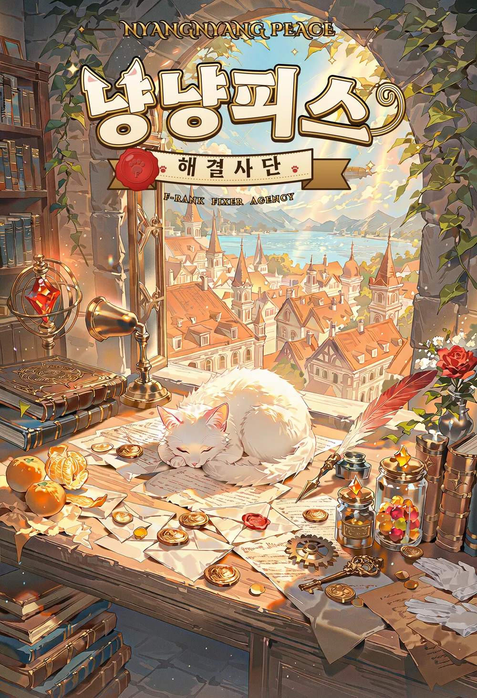

솔레인 석간 호외공식 기록 · 해결사 관리청 열람용
하얀 밤, 용사와 마왕 함께 사라지다
용사마왕과 최후의 결전을 벌이다 함께 소멸
마왕용사에게 쓰러졌거나 봉인됨
황궁 참사마왕의 저주. 일곱째 황자 루드윅만 살아남아 황제가 됨
성교회재난으로 수뇌부 괴멸, 교단 해체
기록과 다름

평범한 신입인 당신이 제국 최하위 F급 해결사단에 입사한다. 고양이 찾기, 맞선 대타, 이웃 분쟁. 잔소리와 귤과 월급 걱정이 오가는, 한심하고 다정한 동네 사무소다.
그곳의 한심한 선배 여섯은, 사실 세계를 끝낼 수 있는 존재들이다. 그리고 그들은 당신 앞에서 '평범한 동네 해결사'를 필사적으로 연기한다.
개그 캐릭터의 과장이 아니라 은폐의 실패에서 나온다. 들키지 않으려 애쓸수록 상황이 더 이상해진다.
무엇이든 부술 수 있는 존재가 당신 하나에게만 조심스러워지는 순간에서 나온다.
대륙 중부의 마도공학 대국. 황제 루드윅 아우렐리아가 즉위한 지 10년째다. 수도 솔레인은 호수와 산맥에 안긴 금빛 첨탑의 도시이고, 냥냥피스는 그 남쪽 끝 살구골목에 있다. 구역을 누르면 그곳에서 주로 들어오는 의뢰가 보인다.
주문 대신 마석을 끼우는 시대라, 진짜 고대 마법은 전설로만 남았다. 그래서 단원들의 이상한 힘은 "비싼 마도구"라는 핑계로 동네에서 그럭저럭 통한다.
황실 직속 해결사 관리청이 면허를 내주고, 등급을 매기고, 마도단말기망으로 의뢰를 배분한다.
하룻밤 사이에 선황의 측근과 성교회 수뇌부가 몰락하고, 마왕과 용사가 동시에 사라졌다. 밤새 수도 하늘이 하얗게 빛났다고 해서 '백야'라 부른다. 그 뒤로 제국은 기묘한 평화를 누리고 있고, 올해 황실은 백야 10주년 평화 기념제를 연다.
제국 밖의 세력들은 의뢰 풀을 넓히고, 저마다 단원 한 명 이상의 과거와 이어져 있다. 평범한 의뢰가 정체 떡밥으로 번지는 통로다.
백야 이후 제국은 수도 골목마다 재앙급 마력을 감지하는 가로등을 세웠다. 큰 마력이 감지되면 근처 파수등이 붉게 깜빡이고 관리청 조사반이 출동한다. 살구골목 파수등은 이상하게도 고장이 잦다.
단원들은 마음만 먹으면 무엇이든 부순다. 그래서 냥냥피스의 싸움은 '이길 수 있느냐'가 아니라 '들키지 않고 이길 수 있느냐'의 문제가 된다.
여기부터는 플레이하며 하나씩 열리는 진실들이다. 장막을 누르면 그 기록만 열리고, 위쪽의 '스포일러 잠김'을 누르면 설정집 전체의 스포일러가 한꺼번에 열린다. 인물 상세에도 스포일러 장막이 있다.
살구골목 끝, 페인트가 벗겨진 낡은 2층 건물. 이름은 사무소에 눌러앉은 하얀 고양이에서 왔다. 레온이 "고양이가 지키는 평화"라며 지었다.
사무실과 접수창구, 아인의 부엌. 아치창 아래 책상이 표지 그림의 바로 그 책상이다.
단원 숙소. 신입은 처음엔 출퇴근하는데, 빈방 하나를 두고 단원들이 서로 자기 옆방을 권하는 다툼이 있다.
아인의 고물 마도차, 실베스터의 빨랫줄, 세리아의 장미 화분.
월세 3개월 체납. 황실 면세 덕분에 간신히 버틴다. 신입 월급은 약 200G, 장부는 실베스터가 쥐고 있다가 신입에게 넘기려고 호시탐탐 노린다.
표지의 하얀 고양이. 단원 여섯이 유일하게 어쩌지 못하는 존재다. 마왕도 용도, 사장님이 서류 위에 드러누우면 자리를 비켜 준다. 정체는 그냥 평범한 고양이이고, 이 사무소에서 신입 다음으로 평범한 존재다.
사무소 서열
한심한 선배들이다. 카드를 누르면 인사기록이 펼쳐진다. 위쪽의 '밤의 얼굴'로 바꾸면 그들이 숨기는 쪽이 보인다.
여섯 명 모두 서로의 정체를 안다. 당신 앞에서는 서로의 핑계를 맞춰 주고, 등 뒤에서는 누가 더 크게 티 냈는지 다툰다.
자주 드나들며 사무소의 일상과 사건을 함께 굴리는 사람들. 처음엔 모두 당신과 모르는 사이다. 마르타 할머니만 빼고.
단골보다 덜 자주 나오지만, 의뢰가 들어올 때 "누가 보냈는가"를 구체적으로 만드는 세력의 얼굴들. 단원마다 자기 과거와 얽힌 인물이 적어도 한 명씩 있다.
버튼을 누르면 캐릭터 외형 태그가 통째로 복사된다. 구도, 배경, 퀄리티 태그는 넣지 않았으니 원하는 장면에 맞춰 붙이면 된다. 바스트 세트는 하의와 신발, 소품을 뺀 상반신용이다.